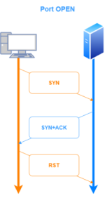
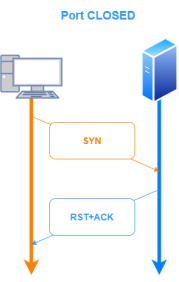

-PS/-PA: no ping (spot a firewall)
After tried with the Ping Sweeping we can try with another method, that not require ping the hosts to find new hosts
Some servers and ports are protected by
firewalls that block pings but on certain system there are always some ports open.
| protocol | port/protocol | Service |
|---|
| TCP | 21 | FTP (File Transfer Protocol) |
| TCP | 22 | SSH - Secure login, file transfer (scp, sftp) e port forwarding |
| TCP | 25 | SMTP - Simple Mail Transfer Protocol (E-mail) |
| UDP | 53 | DNS - Domain Name System |
| TCP | 80,443 | HTTP HyperText Transfer Protocol (WWW) |
| TCP | 111 | ONC RPC, sometimes referred to as Sun RPC |
| TCP | 135 | DCE/RPC Locator service endpoint,used to remotely manage services |
| TCP | 137-139 | NetBIOS Name Service |
| TCP | 445 | NetBIOS Datagram ServiceWindows shares (SMB), also Linux equivalent – Samba service |
| TCP | 502 | ICS Modbus |
| TCP | 1433, 1434 | MySQL Database |
| TCP | 1521 | Oracle database |
| TCP | 3200 | Application Server ABAP, SAP Dispatcher |
| TCP | 3300 | Application Server ABAP, Gateway |
| TCP | 3306 | Database: MySQL, MariaDB |
| TCP | 3389 | RDP - Remote Desktop Protocol |
| TCP | 8080,8443 | HTTP(s) web server, HTTP proxy |
| TCP | 9088,9089 | Informix Dynamic Server |
| TCP | 16300 | Oracle WebCenter Content: Records Management |
| TCP | 20000 | ICS DNP3 |
| TCP | 44818 | Ethernet/IP |
| TCP | 50000,50001 | DB2 |
So if we suspect that there are hosts
protected by firewall against ping sweeping we can use the option
-PS of nmap
This is the ranking of the most common ports:
80,23,443,21,22,25,3389,110,445,139,143,53,135,3306,8080,1723,111,995,993,5900
If we suspect hosts are protected by firewalls and do not respond to pings
We can also use this technique on the most basic TCP ports as an alternative to ping sweep to identify the hosts that are alive
nmap -n -PS21,22,25,53,80,110,111,135,139,443,445 10.50.96.0/23
-n → no DNS resolution for IP addresses
-sn → no port scan after host discovery
-PS → TCP SYN Ping; check if an host is online by probe specific ports. It sends a SYN packet to the ports selected(if not specified only to port 80), If the target gives any reply (SYN/ACK or RST) then it is marked as "up" and our machine drop the connection with a RST packet. If -sn is not specified it start a -sT(TCP scan on the most 1000 common ports).
Both -PS and -sS are used to be more stealthy but
while -PS is used to check if an host is online, -sS is used to discover open ports and services on the hosts  OTHER OPTIONS TO BYPASS FIREWALLS:
-PA → -PA is quite similar to the -PS option. The difference, is that ACK flag is set instead of the SYN flag.
Like -PS is used to discover if a Host is responding. It can be used to detect hosts that block SYN packets or ICMP requests.
The reason for offering both SYN and ACK ping probes is to maximize the chances of bypassing firewalls.
If the host is:
◇
live it will return a RST and will be treated as online. RST packet is sent because the ACK packet sent is not associated with an existing valid connection
◇
offline it should not respond to this request
We can select max 10 ports to scan with this option
nmap -n -sn -PA21,22,25,53,80,110,111,135,139,443,445 192.168.1.97